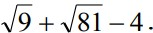

1-variant
1. Birinchi varaqning (Лист1) B3 katakdagi sonni C8 katakdagi songa bo‘linmasini ikkinchi varaqning (Лист2) D9 katagida hisoblang.
2. MS Excel da quyidagi amallarni hisoblang: 2*(6-5)/5.
3. MS Excel da turli radiuslarda aylana uzunligini hisoblang.
4. y=sinx funksiyaning grafigini hosil qiling.
2-variant
1. Birinchi varaqning (Лист1) B1 katakdagi sonni C3 katakdagi songa bo‘linmasini ikkinchi varaqning (Лист2) D3 katagida hisoblang.
2. MS Excel da kubning hajmini hisoblang.
3. Quyidagi ifodani hisoblang: (6:8)-9:81.
4. y=lnx funksiyaning grafigini hosil qiling.
3-variant
1. B1 katakka o‘quvchining familiyasi, C1 katakchaga ismi, D1 katakchaga otasini ismi kiriting. E1 katakka ushbu ma’lumotlarni birlashtiring.
2. A1:D9 diapozondagi sonlarning eng kichigini toping.
3. Quyidagi ifodani hisoblang: (6-8)*6+1.
4. y= x3 finksiyaning grafigini hosil qiling.
4-variant
1. Kvadrat funksiyaning grafigini hosil qiling.
2. A2:E10 diapozondagi sonlar ko‘paytmasini hioblang.
3. Quyidagi ifodani hisoblang: 
4. y= x3 -1 finksiyaning grafigini hosil qiling.